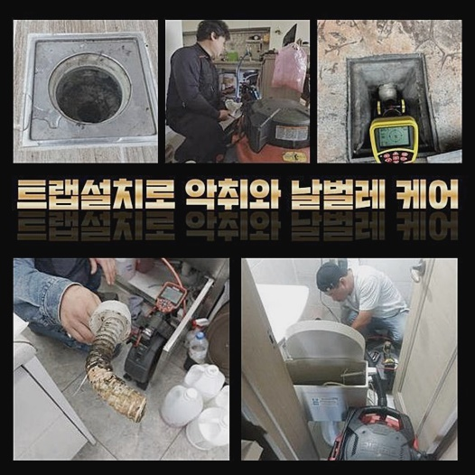
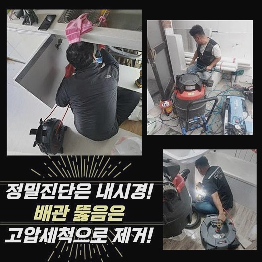
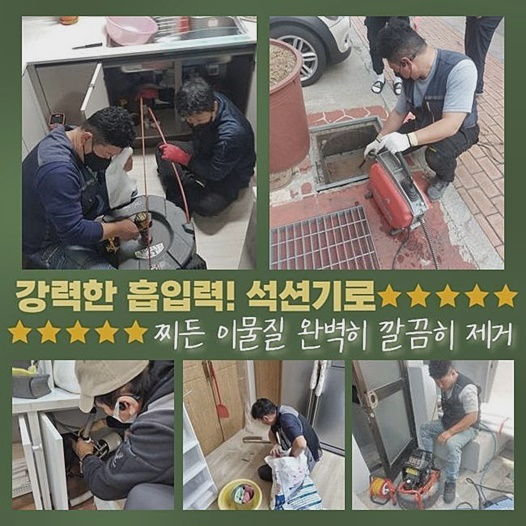
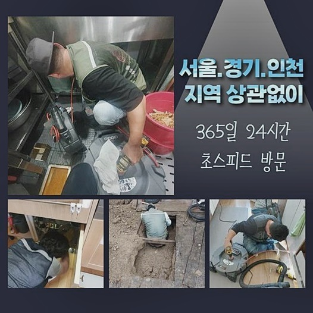
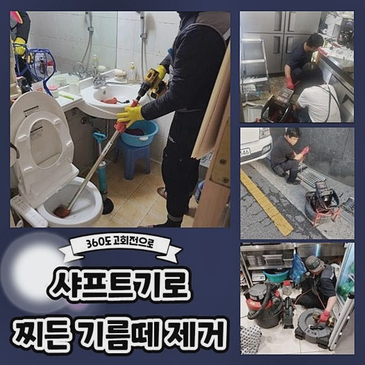
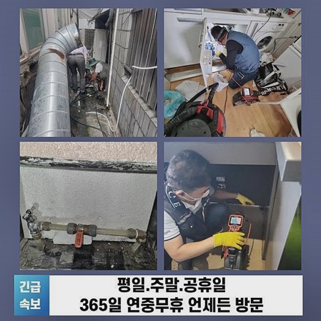
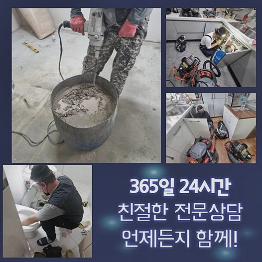

🏠 성남 분당동대변기막힘 구미동 배수구뚫기 누수
성남 분당동 변기막힘 전문 시공 후기

📋 작업 개요
- 위치: 성남 분당동, 분당동, 성남
- 서비스 유형: 변기막힘, 하수구막힘, 배관막힘, 누수수리, 뚫는업체, 배관청소, 고압세척
- 작업 일시: 2024. 9. 30. 21:11
- 업체명: 하수구수사대 (010-5615-2118)
🔍 문제 상황
성남 분당동대변기막힘 구미동 배수구뚫기 누수
보통 건물의 경우 수많은 지장물이 자리잡고 있죠 그 와중 중요시 되는건 하수관로인데요
수도 사용을 하지않는 건물이 없듯이 구축물엔 통수를 도와주는 설비가 적합하게 매립되어 있는것이 중요합니다
혹시라도 잔여물질이 하수도로 빠지게되어 통수라인이 막혀버리면 일상 전반에서 불편을 감내해야하죠
위와같은 이유들로 배출과정의 결함이 발발하면 곧장 고쳐내야 하겠습니다
허나 외부에서 주시할 때 이물이 얼마만큼 깊숙히 잔존하는지 관찰할 수가 없어요
더 나아가 형상까지 예상해보는게 어려워요
전문적 기계없이 전문인이랄지라도 빈틈없는 청소들을 속행할 수가 없어요
이러한 특징으로 인해서 전문성이 떨어지면 걷잡을 수 없게 됩니다
반대로 최근 자가적으로 작업을 진행하려는 고객분이 있습니다
youtube가 생겨난 뒤 물빠짐 사고의 대처법이 종종 보입니다
이로인하여 압축장비나 클리너들을 어떠한 때에 이용해주어야 하나 인지할 수 있습니다
반대로 항상 해당 방법들로 완화되지는 않는데요
문제라 함은 안측의 까닭을 해결하지 않았기 때문이죠

🔎 원인 분석
💡 전문가 진단: 정밀 진단 장비를 사용하여 슬러지의 고착 여부를 판명하고 타격/세척 작업을 실시했습니다.
예상치 못한 이물이 존재할 수도 있고 석회잔해가 각 라인에 존재해 증상이 생겼을수도 있답니다
또한 식재료나 머리카락 덩어리들이 하수구설비를 막아서죠
위와같은 이유들로 청소를 수행하고자 하면 전문장비들이 요구되죠
대표할 수 있는것이 내시경장비 라고 할 수 있어요
내시경기기는 케이블들이 달려있고 끝자리에는 렌즈등과 플래쉬가 있어요
위와같은 이유들로 육안 관찰이 어렵고 비좁더라도 점검이 가능하겠습니다
더 나아가 청소할 때도 내시경장치는 무조건적인 역할들을 맡고있어요
장비의 도움없이는 체계적인 계획없이 세척을 시행할수밖에 없어요
그래서 전문지식이 없는 사람들은 슬러지를 없애주는것이 쉽지 않아요
고객님들은 클리너들을 쓰는것에 그칩니다
이외에 용도에 벗어난 도구들로 하수관에 파손이슈를 일으키면 증상이 커지게됩니다
마찬가지로 세척에 필요한 기기는 샤프트기이죠
샤프트장치의 운용 덕에 세척기간까지 줄여나갈 수 있어요
정확하게 이물들을 목표하여 장치를 운용하기에 고착이물 제거가 속행될 수 있습니다

🔧 작업 과정
위와같은 이유들로 막혀버려 애를 먹는 상황들이 생겨나 전문인을 보실 때에 기기의 구비량들을 확인해보세요!
선정 기준을 간단하게 금액적인 부분으로 고객님들을 설득하는 전문인도 간혹 있어요
금액도 물론 중요반대로 그밖에도 필히 체크해보세요
업체들의 스타일에 따라서도 대응이 다르며 단계에도 다르죠
셀프적인 방법으로 한시적 통수과정은 가능해요
배관 관련 도구를 사용하면 간소한 증상을 걷어내는건 불가능하다고 할 수 없는데요
반대로 까닭을 사라지게하지 않아서 다시금 증상들이 배수관에서 야기되는건 시간문제에요
앞서 방문드린 현장은 연립주택이였는데요
악취가 배수구로부터 퍼졌고 물들도 흘러가지않는다 고통을 호소하셨어요
지속적으로 내려보아야 조금씩 빠지는 탓에 생활측면에서도 곤욕스런 상태라고 말씀해주셨는데요
내시경장치를 사용하여 내부를 관찰하니 물티슈와 석회뭉치가 보였는데요
유수를 보니 수압이 강하지않은 건축물이지 않을까 하였는데 고착된 이물들이 한번에 쌓이게 되서 약해진 수압들로 배출시키지 못한 상태였습니다
또한 심층부엔 흡착물도 확인되었습니다
우선 석션장치와 샤프트장비를 꺼냈어요
하수도의 잔해물을 사라지게끔 하는 단계부터 실시해주었어요
처음엔 석션기기가 사용되는데요
배수 문제는 양상을 확인하고 알맞은 장치를 사용해주어야 하죠
1차 청소들을 마치고 흡착물을 제거시키기위해서 샤프트도구를 투입시켰어요
사슬부의 작동을 기반으로 고착물들을 제거시켰어요
그러나 강한 힘에 주의해야합니다
운용이 제대로 안되면 배관라인을 손상시킬 위험이 있으므로 노하우에 기반한 장비들의 이용이 필요하겠습니다
저희의경우 베테랑들로 경험부족으로 인한 사고가 나타날 여지는 제로에 가까워요
그렇지만 위와 같은 사태에 대응하기위해 내시경의 영상까지 확인해줍니다


✅ 작업 완료
샤프트장비로 고착물 배출을 수행해보니 처음보다 통로가 트였는데요
최종적으로 세척의 체크를 목적으로 하는 배수 검열을 거치는데요
이러한 과정들은 하수도에 수돗물을 쏟아내어 손쉬운 방법을 통해 확인합니다
시행하고 있는 방법들이 확실한 방식이고 배수 속도 저하의 증상을 관찰할 수 있는 과정으로 절대적으로 실시하죠
많은 양의 수도를 배출하니 배관으로 신속히 빠지는걸 목격했고 청소를 마무리했는데요
저희전문진들은 지역적 한계없이 어디든지 신속히 내방하니 배수관로에 증상이 야기되었다면 고민없이 연락하시면 되겠습니다 궁금 사항에 대해 응대하겠습니다




⚠️ 베란다 누수 및 방수 관리 방법
- ✅ 비가 많이 올 때 창틀 주변이나 아래층 천장에 얼룩이 생기는지 정기적으로 확인해 보세요.
- ✅ 우수관 주변 실리콘 마감이 들뜨거나 깨진 틈새가 있는지 손상 여부를 수시로 체크하세요.
- ✅ 베란다 바닥 타일의 줄눈(메지)이 소실되면 그 틈으로 물이 침투하여 누수가 유발됩니다.
- ✅ 누수 의심 증상 발견 시 방치하면 아래층 손실이 커지므로 즉시 전문가의 진단을 받으십시오.
💡 핵심 정리
- 확실한 장비 작업(내시경 점검 및 샤프트 스케일링)으로 원인을 뿌리 뽑습니다.
- 작업 후 1년 이내에 동일한 부위 재발 시 100% 무상 A/S 서비스를 보장합니다.
- 서울 · 경기 · 인천 전 지역에 24시간 언제든 긴급 출동할 수 있도록 항시 대기 중입니다.
❓ 자주 묻는 질문 (FAQ)
🚨 성남 분당동 변기막힘 문제로 고민이신가요?
정확한 원인 진단과 확실한 시공으로 재발 없는 해결을 약속드립니다.
24시간 긴급 출동 | 서울 · 경기 · 인천 전지역 | 1년 내 재발 시 무상 A/S